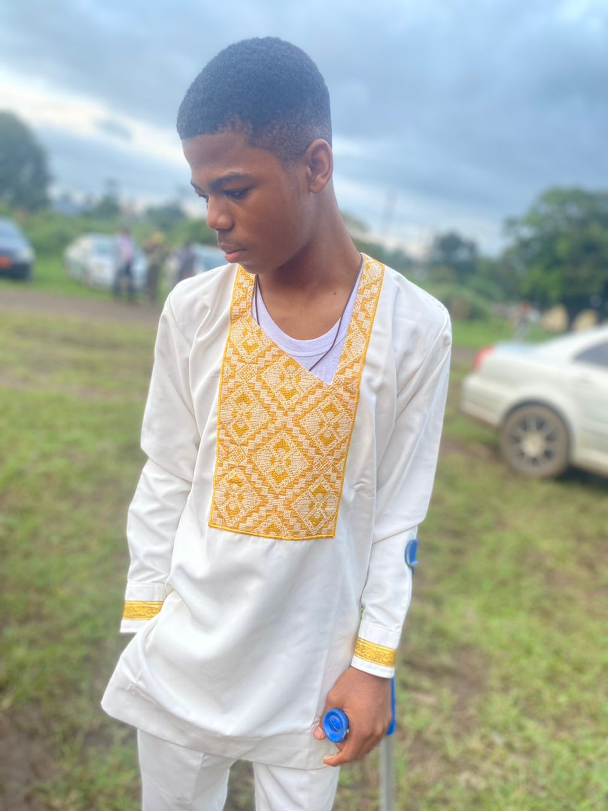

My name is Meriki Jubert. I am a softwear engineering student at SHIBMATS Acedemy Buea. I enjoy coding, Anime and music in my free time. My favourite anime is Naruto and My favourite artist is Omah Lay.
ENGLISH
Me llamo Jubert. Soy estudiante de ingeniería de software y me encantan el anime, la música y la programación. En mi tiempo libre, disfruto viendo Naruto y escuchando a mi artista favorito, Omah Lay.
SPANISH